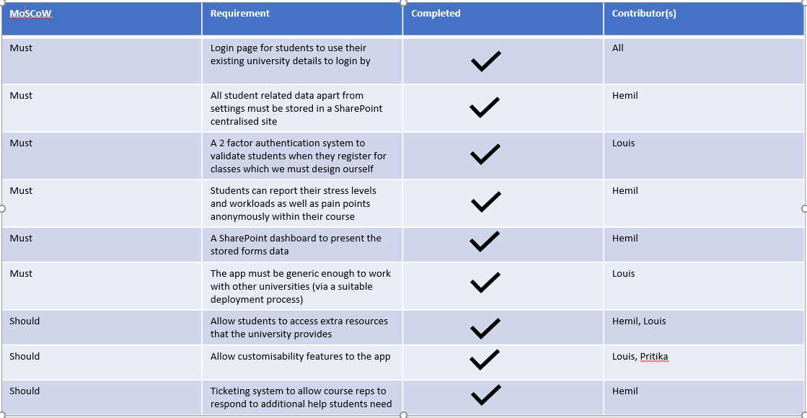
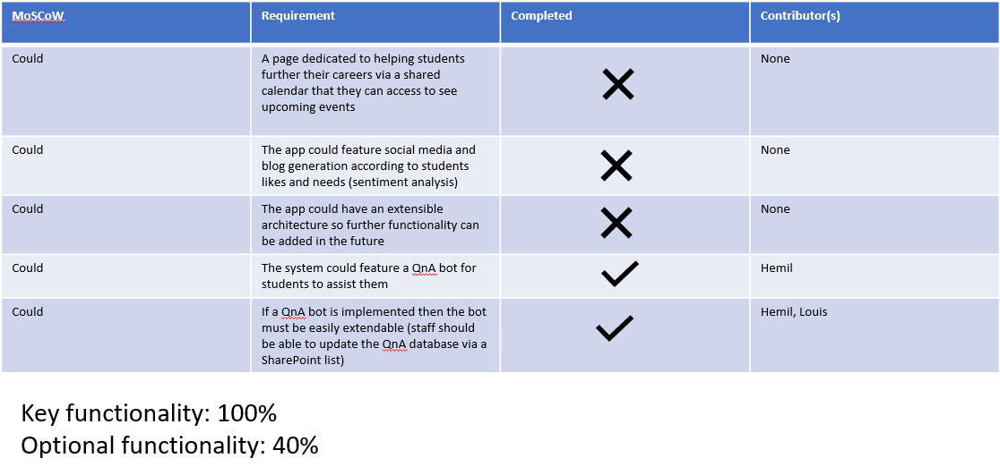
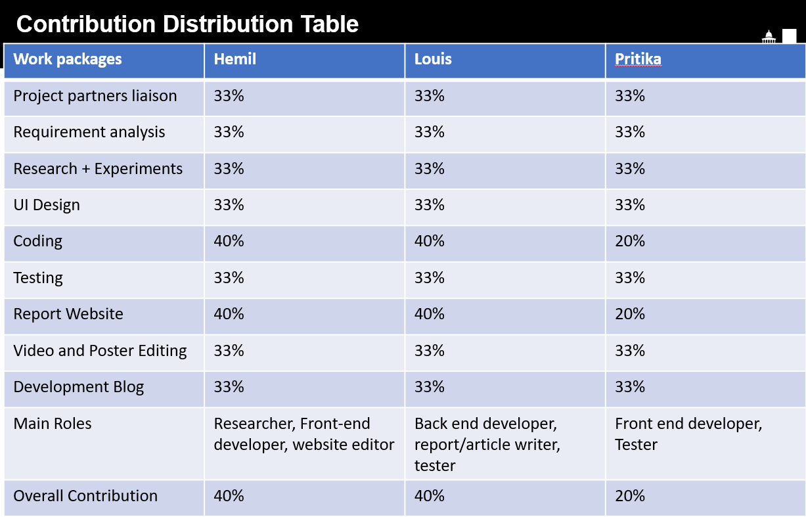

Introduction
This page explains the summary of achievements, critical evaluation of the project and future work.
Summary of achievements
Achievement Table for MoSCoW list


List of known bugs
There is currently no known bugs, which we have identified during testing of the application. Our team used github issue tracker in order to keep track of bugs that we may have encountered
during testing or implementation stages. This helped to keep the bug list empty.
Individual contribution table

Critical evaluation of project
In this section we will critically evaluate our project with respect to the following factors:
- User interface: We have used a common system of having a navigation bar to go through the different pages. We also ensured that simplicity and readability were kept as the top target for the web application. Generally, the UI is easy to use as described by our testers. They are happy with how easily accessible everything is on the web application. We have put in a lot of work to make the system clean and user friendly. However, the only downside to the UI would be its desktop version. Responsive testing for different screen sizes suggests that even though the UI is readable and usable, it does not look as visually appealing. This is documented as part of the future work. For more information on the testing, head over to the testing section.
Overall, we can mark ourselves "good" for the UI work.
- Functionality: Since we have achieved all the key functionalities and 40% of the optional functionalities, the app can be seen as providing a lot functionality. We have made sure to use a generic system design so other universities can deploy scripts to setup the web application for their own use. Students can view twitter, twitch, find links within their university, look for resources on Linkedin Learning, look for resources within MS Learn, communicate with a QnA bot for queries, report their stress levels, get additional help on their studies or modules and change their preferences from the settings page. Most importantly students can also register for their lectures (this applies to our UCL client only for which a backend is being developed by the ORCA team).
Overall, we give ourselves "very good" for functionality completion
- Stability: Our team has done a lot of testing, having written more than 50 quality tests for unit and integration testing. We were sadly unable generate a coverage report due to the version of React we were using (one higher than the one the coverage report allows). The tests do not only include the web application, the tests also include MS Flows testing (which was manual) which is key part of our system to automate data to SharePoint to be used by lecturers and course representatives. During user acceptance testing, the flows had run successfully, as mentioned on the testing page. Even though we have not performed proper stress testing on the MS Flows, due to the lack of devices, testers and time, Microsoft has stated that all the flows we have created can have a 1000 concurrent runs within a minute.
We also have continuous integration setup within our github repository which is a formatter and linter ensuring the code written is to a good quality and standard.
Overall, we give ourselves "good" for the stability section.
- Efficiency: Throughout the entire project we aimed to maximise performance. To do this, we used React as its been made to minimize costly DOM operations that in turn update the UI. In this case, not much extra work was needed to maximise the performance of the UI. However, even though the application loads up quickly and performs the basic operations well, in some cases it is slow. For example, when using the Linkedin Learning API to search for results, users have to wait for upto 8 seconds to receive UI feedback. We recognise that it is not the fault of our application as it is in fact the API that sends the results slowly. Overall, we have kept in mind that ultimately students will not have time to wait too much and ensured that majority of the UI loads in quickly.
Overall, in this section we give ourselves "good".
- Compatibility: Ever since the project started we made sure to keep the devices and system the end-user would have. In this case, devices and systems would range from different browsers (chrome,firefox etc.) to different device types (tablets, mobile phones and laptops). We have conducted appropriate responsive testing and compatibility testing with different browsers and are proud to say that it works successfully on all browsers and screen sizes. However, user acceptance suggested that even though the UI for the laptop version was neat, it strayed from a "standard" design for larger screens which normally involved having a navigation bar at the top.
In this area, we give ourselves "good" in terms of responsive design.
- Maintainability: The code base is well documented via integration/unit tests ("tests as documentation") allowing developers to easily follow the codebase and extend upon it as necessary. Due to our component based design, the architecture can easily be changed without the code breaking. We have created essentially a component-based functionality but it is not fully extensible as it would require whats called "shotgun surgery". This means in order to add one component many different classes would need to be changed to facilitate that. Due to our lack of time we were unable to make this as a base architecture, and hence have written about this in future works.
As the code is well-documented via appropriate tests, we can give ourselves "very good" here.
- Project Management: This was difficult to do as one of our team members was an international student so communication and synchronisation was difficult. However, we made sure to set up meetings 24 hours prior to meeting them. Additionally, in the 2nd term we took a sprint based approach to the project where we would have regular stand-ups during the week at 10:30am. Github issue tracker was consistently used with the sprint boards to assign tasks to each member (as well as self assign). We could have potentially used Notion for the project instead which is deemed by many to be better and easier to use.
In this area, we give ourselves "good" because even though we completed the project with changing requirements, one of the members failed to communicate well-enough.
Future Work
If we had more time the following things is what would be appropriate to look into:
- The first thing that should be done is that there should be a redesign of the user interface for the desktop version of the site. Even though the website scales well into a desktop version,
it deviates from how a standard desktop site looks. However, the user interface looks good on tablet and mobile devices.
- A native version of the web application should be made. Since the app already exists as a React application, it would be appropriate to make a corresponding mobile application in React Native. This will probably improve the experience of the user as well.
- The architecture of the web application can be redesigned so that it is extensible, currently the system does allow extensibility but requires modification of a fair number of parts of the application. So a redesign of the base of the system to instead use "extends" from a single App component to add more components would make the system significantly neater.
- Considering universities want to learn on student stresses and wellbeing, data collected from the application can be mined via machine learning in terms of their wants and needs. Our system currently just stores this data and displays it.